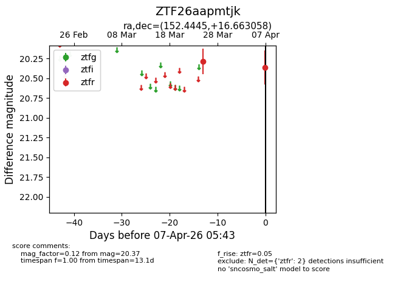
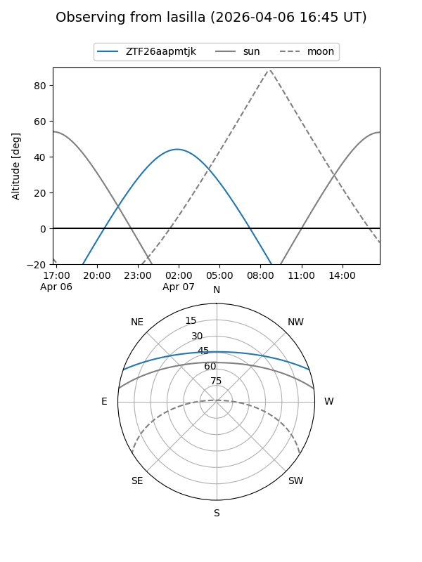
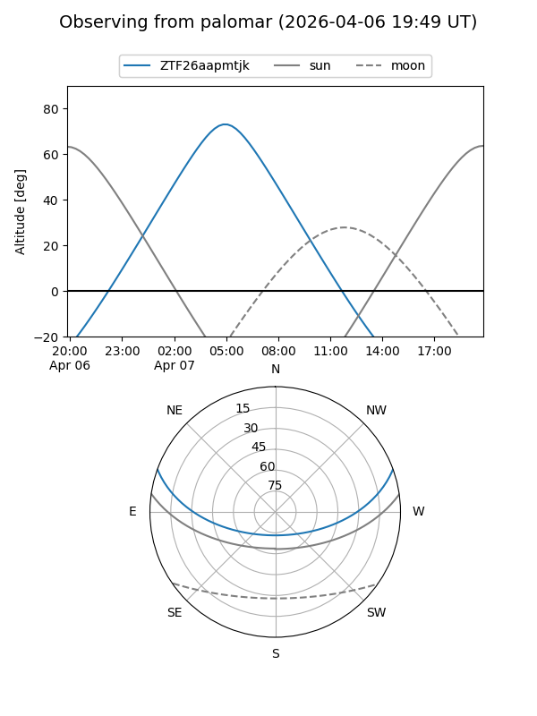

ZTF26aapmtjk
Target ZTF26aapmtjk at 2026-04-07 05:47
Aliases and brokers:
FINK: link
Lasair: link
ALeRCE: link
alt names
ZTF26aapmtjk (ztf,fink_ztf)
Coordinates:
equatorial (ra, dec) = 152.4445,+16.66306
equatorial (HMS+DMS) = 10:09:46.68,+16:39:47.01
galactic (l, b) = (220.0350,+51.25185)
Flags:
Photometry:
last ztfr=20.37
2 ztfr detections
Lightcurve

Visibility


Additional plots